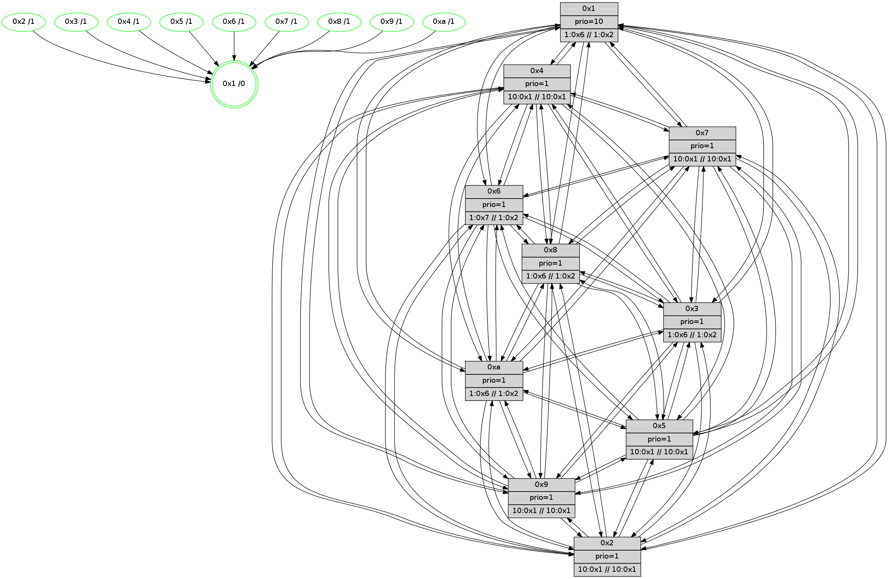

>> << IDX [start] -100 -25 -5 +0 +5 +25 +100 [585.221779108]
 Previous packets
----------------------------------------------------------------------
580.492992 beacon01(faad) #0 coord=01,02,03,04,05,06,07,0a,09,08 cycle=688.0ms assoc
-- color-indic=1 64 32 5a
580.502974 beacon02(faad) #0 coord=01,02,03,04,05,06,07,0a,09,08 cycle=688.0ms assoc 64 a1 6b
580.512974 beacon03(faad) #0 coord=01,02,03,04,05,06,07,0a,09,08 cycle=688.0ms assoc 64 db 26
580.522977 beacon04(faad) #0 coord=01,02,03,04,05,06,07,0a,09,08 cycle=688.0ms assoc 64 ac cc
580.532975 beacon05(faad) #0 coord=01,02,03,04,05,06,07,0a,09,08 cycle=688.0ms assoc 64 d6 81
580.542974 beacon06(faad) #0 coord=01,02,03,04,05,06,07,0a,09,08 cycle=688.0ms assoc 64 58 56
580.552975 beacon07(faad) #0 coord=01,02,03,04,05,06,07,0a,09,08 cycle=688.0ms assoc 64 22 1b
580.562982 beacon0a(faad) #0 coord=01,02,03,04,05,06,07,0a,09,08 cycle=688.0ms assoc 64 53 10
580.572980 beacon09(faad) #0 coord=01,02,03,04,05,06,07,0a,09,08 cycle=688.0ms assoc 64 dd c7
580.582979 beacon08(faad) #0 coord=01,02,03,04,05,06,07,0a,09,08 cycle=688.0ms assoc 64 a7 8a
580.596125 [Hello(2): seq=370 sym=4,5,7,6,3,9,8,10,1 sysInfo=hasWarning stat=4:6,0,10,2/5:4,3,8,4/7:10,4,12,3/6:15,10,12,3/3:0,1,4,1/9:10,14,9,1/8:0,7,5,1/10:8,7,6,3/1:2,12,4,0]
580.598814 [Color(3) seq=53 @0:0 prio=1 >1.@6,1.@7,1.@8,1.@9 >>1.@2,1.@3,1.@4]
580.600772 [Hello(7): seq=373 sym=2,3,5,6,4,8,9,10,1 sysInfo= stat=2:5,11,0,7/3:14,14,14,7/5:0,9,13,8/6:1,3,0,0/4:5,5,14,5/8:14,2,15,2/9:12,9,15,7/10:1,12,13,5/1:0,12,3,0]
580.603896 [Color(7) seq=41 @0:0 prio=1 >10.@1,1.@4,1.@6,1.@8 >>10.@1,1.@2,1.@3]
580.606794 [Hello(6): seq=373 sym=2,3,5,4,7,9,8,10,1 sysInfo=coloring-mode-on,ColoringModeIndicationCalled stat=2:0,1,1,4/3:4,0,13,5/5:4,13,13,7/4:0,11,13,5/7:12,10,11,2/9:2,13,15,6/8:3,12,12,3/10:5,14,15,5/1:0,15,2,0]
580.609917 [Color(6) seq=53 @0:0 prio=1 >1.@7,1.@8,1.@9,1.@a >>1.@2,1.@3,1.@4]
580.614703 [Color(10) seq=42 @0:0 prio=1 >1.@6,1.@7,1.@8,1.@9 >>1.@2,1.@3,1.@4]
580.616653 [Color(4) seq=28 @0:0 prio=1 >10.@1,1.@2,1.@3,1.@5 >>10.@1,1.@4,1.@6]
580.619368 [STC(1) #0.32 tree-change,inconsistent-stability,stable,to-color d=0]
580.622161 [Color(9) seq=37 @0:0 prio=1 >10.@1,1.@4,1.@6,1.@7 >>10.@1,1.@2,1.@3]
580.624978 [Color(5) seq=37 @0:0 prio=1 >10.@1,1.@4,1.@6,1.@7 >>10.@1,1.@2,1.@3]
----------------------------------------------------------------------
581.281122 beacon01(faad) #0 coord=01,02,03,04,05,06,07,0a,09,08 cycle=688.0ms assoc
-- color-indic=1 64 8e 5f
581.291104 beacon02(faad) #0 coord=01,02,03,04,05,06,07,0a,09,08 cycle=688.0ms assoc 64 1d 6e
581.301105 beacon03(faad) #0 coord=01,02,03,04,05,06,07,0a,09,08 cycle=688.0ms assoc 64 67 23
581.311105 beacon04(faad) #0 coord=01,02,03,04,05,06,07,0a,09,08 cycle=688.0ms assoc 64 10 c9
581.321105 beacon05(faad) #0 coord=01,02,03,04,05,06,07,0a,09,08 cycle=688.0ms assoc 64 6a 84
581.331106 beacon06(faad) #0 coord=01,02,03,04,05,06,07,0a,09,08 cycle=688.0ms assoc 64 e4 53
581.341105 beacon07(faad) #0 coord=01,02,03,04,05,06,07,0a,09,08 cycle=688.0ms assoc 64 9e 1e
581.351111 beacon0a(faad) #0 coord=01,02,03,04,05,06,07,0a,09,08 cycle=688.0ms assoc 64 ef 15
581.361091 beacon09(faad) #0 coord=01,02,03,04,05,06,07,0a,09,08 cycle=688.0ms assoc 64 61 c2
581.371111 beacon08(faad) #0 coord=01,02,03,04,05,06,07,0a,09,08 cycle=688.0ms assoc 64 1b 8f
581.382313 [Hello(9): seq=317 sym=5,2,3,4,7,6,8,10,1 sysInfo=hasWarning stat=5:3,1,8,6/2:0,15,13,4/3:5,1,7,4/4:6,13,10,4/7:10,15,12,2/6:2,5,9,3/8:2,15,7,1/10:15,2,9,5/1:2,12,7,0]
581.384948 [Hello(10): seq=306 sym=6,2,3,8,9,5,7,4,1 sysInfo= stat=6:10,4,12,3/2:10,5,3,0/3:12,7,2,1/8:11,11,11,3/9:9,14,9,3/5:14,0,8,5/7:8,15,11,2/4:10,15,8,6/1:3,10,5,0]
581.387571 [Hello(5): seq=374 sym=7,6,4,3,1,9,8,10,2 sysInfo= stat=7:8,0,15,3/6:12,9,13,3/4:15,15,9,3/3:0,6,4,2/1:10,15,4,0/9:13,1,11,3/8:14,7,7,2/10:14,8,10,4/2:2,0,10,3]
581.391002 [STC(2)->1 #0.32 tree-change,inconsistent-stability,stable,to-color d=1]
581.393884 [STC(6)->1 #0.32 tree-change,inconsistent-stability,stable,to-color d=1]
581.397374 [Color(2) seq=31 @0:0 prio=1 >10.@1,1.@4,1.@6,1.@7 >>10.@1,1.@2,1.@3]
581.399647 [STC(7)->1 #0.32 tree-change,inconsistent-stability,stable,to-color d=1]
581.401351 [Hello(4): seq=374 sym=5,7,6,2,3,9,8,10,1 sysInfo= stat=5:7,6,10,6/7:13,4,12,2/6:3,10,12,4/2:8,15,10,5/3:12,0,3,2/9:7,4,8,3/8:0,15,13,4/10:7,8,10,4/1:6,13,8,0]
581.404443 [Color(1) seq=54 @0:0 prio=10 >1.@6,1.@7,1.@8,1.@9 >>1.@2,1.@3,1.@4]
581.407974 [STC(4)->1 #0.32 tree-change,inconsistent-stability,stable,to-color d=1]
581.409772 [STC(10)->1 #0.32 tree-change,inconsistent-stability,stable,to-color d=1]
581.413430 [Hello(8): seq=317 sym=5,2,3,4,7,6,9,10,1 sysInfo=coloring-mode-on,ColoringModeIndicationCalled stat=5:3,0,10,5/2:10,7,1,0/3:13,9,10,6/4:0,15,13,5/7:5,15,13,4/6:13,11,12,4/9:5,13,13,4/10:3,3,8,5/1:1,0,7,0]
581.416908 [STC(8)->1 #0.32 tree-change,inconsistent-stability,stable,to-color d=1]
581.419265 [Hello(3): seq=374 sym=1,7,6,2,4,8,9,10,5 sysInfo=coloring-mode-on,ColoringModeIndicationCalled stat=1:9,14,7,0/7:10,2,9,3/6:1,4,8,4/2:1,11,11,6/4:2,14,11,4/8:15,12,6,0/9:6,14,14,5/10:1,15,7,3/5:4,0,11,5]
581.423156 [TreeStatus(8)-.->1 #0.32 tree-change,inconsistent-stability,stable child=1]
581.425419 [STC(3)->1 #0.32 tree-change,inconsistent-stability,stable,to-color d=1]
----------------------------------------------------------------------
582.069255 beacon01(faad) #0 coord=01,02,03,04,05,06,07,0a,09,08 cycle=688.0ms assoc
-- color-indic=1 64 ba 47
582.079239 beacon02(faad) #0 coord=01,02,03,04,05,06,07,0a,09,08 cycle=688.0ms assoc 64 29 76
582.089237 beacon03(faad) #0 coord=01,02,03,04,05,06,07,0a,09,08 cycle=688.0ms assoc 64 53 3b
582.099237 beacon04(faad) #0 coord=01,02,03,04,05,06,07,0a,09,08 cycle=688.0ms assoc 64 24 d1
582.109240 beacon05(faad) #0 coord=01,02,03,04,05,06,07,0a,09,08 cycle=688.0ms assoc 64 5e 9c
582.119239 beacon06(faad) #0 coord=01,02,03,04,05,06,07,0a,09,08 cycle=688.0ms assoc 64 d0 4b
582.129239 beacon07(faad) #0 coord=01,02,03,04,05,06,07,0a,09,08 cycle=688.0ms assoc 64 aa 06
582.139245 beacon0a(faad) #0 coord=01,02,03,04,05,06,07,0a,09,08 cycle=688.0ms assoc 64 db 0d
582.149245 beacon09(faad) #0 coord=01,02,03,04,05,06,07,0a,09,08 cycle=688.0ms assoc 64 55 da
582.159244 beacon08(faad) #0 coord=01,02,03,04,05,06,07,0a,09,08 cycle=688.0ms assoc 64 2f 97
582.170828 [Hello(1): seq=283 sym=4,2,9,5,10,3,8,6,7 sysInfo=coloring-mode-on,ColoringModeRequestCalled stat=4:10,4,1,6/2:10,0,15,6/9:7,8,4,6/5:3,11,15,7/10:15,3,1,5/3:10,7,5,8/8:13,3,5,5/6:2,13,2,3/7:9,4,3,6]
582.173864 [Color(9) seq=38 @0:0 prio=1 >10.@1,1.@4,1.@6,1.@7 >>10.@1,1.@2,1.@3]
582.176426 [Hello(7): seq=374 sym=2,3,5,6,4,8,9,10,1 sysInfo= stat=2:6,11,0,7/3:15,14,15,7/5:0,10,13,8/6:2,4,0,0/4:6,6,15,5/8:15,2,0,3/9:12,10,15,7/10:1,13,14,5/1:0,13,4,0]
582.179186 [Hello(6): seq=374 sym=2,3,5,4,7,9,8,10,1 sysInfo=coloring-mode-on,ColoringModeIndicationCalled stat=2:1,2,1,4/3:5,0,14,5/5:4,14,13,7/4:1,12,14,5/7:12,10,12,2/9:2,14,15,6/8:4,12,13,4/10:5,15,0,5/1:0,0,3,0]
582.181644 [Color(8) seq=54 @0:0 prio=1 >1.@6,1.@7,1.@9,1.@a >>1.@2,1.@3,1.@4]
582.184058 [Color(10) seq=43 @0:0 prio=1 >1.@6,1.@7,1.@8,1.@9 >>1.@2,1.@3,1.@4]
582.186376 [Color(7) seq=42 @0:0 prio=1 >10.@1,1.@4,1.@6,1.@8 >>10.@1,1.@2,1.@3]
582.188378 [Hello(2): seq=371 sym=4,5,7,6,3,9,8,10,1 sysInfo=hasWarning stat=4:7,1,11,2/5:4,4,8,4/7:11,5,13,3/6:0,11,12,3/3:1,2,5,1/9:11,15,9,1/8:1,7,6,2/10:9,8,7,3/1:2,13,5,0]
582.191542 [Color(5) seq=38 @0:0 prio=1 >10.@1,1.@4,1.@6,1.@7 >>10.@1,1.@2,1.@3]
582.194237 [Color(3) seq=54 @0:0 prio=1 >1.@6,1.@7,1.@8,1.@9 >>1.@2,1.@3,1.@4]
582.197205 [Color(4) seq=29 @0:0 prio=1 >10.@1,1.@2,1.@3,1.@5 >>10.@1,1.@4,1.@6]
582.200032 [Color(6) seq=54 @0:0 prio=1 >1.@7,1.@8,1.@9,1.@a >>1.@2,1.@3,1.@4]
----------------------------------------------------------------------
582.857388 beacon01(faad) #0 coord=01,02,03,04,05,06,07,0a,09,08 cycle=688.0ms assoc
-- color-indic=1 64 06 42
582.867370 beacon02(faad) #0 coord=01,02,03,04,05,06,07,0a,09,08 cycle=688.0ms assoc 64 95 73
582.877372 beacon03(faad) #0 coord=01,02,03,04,05,06,07,0a,09,08 cycle=688.0ms assoc 64 ef 3e
582.887370 beacon04(faad) #0 coord=01,02,03,04,05,06,07,0a,09,08 cycle=688.0ms assoc 64 98 d4
582.897372 beacon05(faad) #0 coord=01,02,03,04,05,06,07,0a,09,08 cycle=688.0ms assoc 64 e2 99
582.907370 beacon06(faad) #0 coord=01,02,03,04,05,06,07,0a,09,08 cycle=688.0ms assoc 64 6c 4e
582.917372 beacon07(faad) #0 coord=01,02,03,04,05,06,07,0a,09,08 cycle=688.0ms assoc 64 16 03
582.927376 beacon0a(faad) #0 coord=01,02,03,04,05,06,07,0a,09,08 cycle=688.0ms assoc 64 67 08
582.937376 beacon09(faad) #0 coord=01,02,03,04,05,06,07,0a,09,08 cycle=688.0ms assoc 64 e9 df
582.947376 beacon08(faad) #0 coord=01,02,03,04,05,06,07,0a,09,08 cycle=688.0ms assoc 64 93 92
582.958920 [Hello(10): seq=307 sym=6,2,3,8,9,5,7,4,1 sysInfo= stat=6:10,5,12,3/2:11,5,3,0/3:13,8,3,1/8:12,11,12,4/9:9,14,9,3/5:14,1,8,5/7:8,0,11,2/4:10,0,8,6/1:4,10,5,0]
582.962915 [Color(2) seq=32 @0:0 prio=1 >10.@1,1.@4,1.@6,1.@7 >>10.@1,1.@2,1.@3]
582.964970 [Color(1) seq=55 @0:0 prio=10 >1.@6,1.@7,1.@8,1.@9 >>1.@2,1.@3,1.@4]
582.967190 [Hello(5): seq=375 sym=7,6,4,3,1,9,8,10,2 sysInfo= stat=7:8,0,0,3/6:12,10,14,3/4:0,0,10,3/3:1,7,5,2/1:11,0,4,0/9:13,1,11,3/8:15,7,8,3/10:14,8,11,4/2:2,1,11,3]
582.969889 [Hello(8): seq=318 sym=5,2,3,4,7,6,9,10,1 sysInfo=coloring-mode-on,ColoringModeIndicationCalled stat=5:3,1,10,5/2:11,7,1,0/3:13,10,11,6/4:0,0,13,5/7:5,0,13,4/6:13,12,12,4/9:6,13,13,4/10:3,4,8,5/1:2,0,7,0]
582.973236 [Hello(4): seq=375 sym=5,7,6,2,3,9,8,10,1 sysInfo= stat=5:7,6,10,6/7:13,4,12,2/6:3,11,12,4/2:8,15,10,5/3:13,0,4,2/9:7,4,8,3/8:1,15,14,5/10:7,8,11,4/1:7,13,8,0]
582.980453 [Hello(9): seq=318 sym=5,2,3,4,7,6,8,10,1 sysInfo=hasWarning stat=5:4,2,8,6/2:1,0,14,4/3:6,2,8,4/4:7,14,11,4/7:11,0,13,2/6:3,6,10,3/8:3,0,8,2/10:0,3,10,5/1:3,13,7,0]
----------------------------------------------------------------------
583.645520 beacon01(faad) #0 coord=01,02,03,04,05,06,07,0a,09,08 cycle=688.0ms assoc
-- color-indic=1 64 c2 4c
583.655503 beacon02(faad) #0 coord=01,02,03,04,05,06,07,0a,09,08 cycle=688.0ms assoc 64 51 7d
583.665502 beacon03(faad) #0 coord=01,02,03,04,05,06,07,0a,09,08 cycle=688.0ms assoc 64 2b 30
583.675504 beacon04(faad) #0 coord=01,02,03,04,05,06,07,0a,09,08 cycle=688.0ms assoc 64 5c da
583.685503 beacon05(faad) #0 coord=01,02,03,04,05,06,07,0a,09,08 cycle=688.0ms assoc 64 26 97
583.695502 beacon06(faad) #0 coord=01,02,03,04,05,06,07,0a,09,08 cycle=688.0ms assoc 64 a8 40
583.705503 beacon07(faad) #0 coord=01,02,03,04,05,06,07,0a,09,08 cycle=688.0ms assoc 64 d2 0d
583.715508 beacon0a(faad) #0 coord=01,02,03,04,05,06,07,0a,09,08 cycle=688.0ms assoc 64 a3 06
583.725507 beacon09(faad) #0 coord=01,02,03,04,05,06,07,0a,09,08 cycle=688.0ms assoc 64 2d d1
583.735507 beacon08(faad) #0 coord=01,02,03,04,05,06,07,0a,09,08 cycle=688.0ms assoc 64 57 9c
583.746737 [Hello(2): seq=372 sym=4,5,7,6,3,9,8,10,1 sysInfo=hasWarning stat=4:8,2,11,2/5:5,5,8,4/7:11,5,13,3/6:0,12,12,3/3:1,3,5,1/9:12,15,9,1/8:2,7,6,2/10:10,8,7,3/1:2,14,5,0]
583.749648 [Color(5) seq=39 @0:0 prio=1 >10.@1,1.@4,1.@6,1.@7 >>10.@1,1.@2,1.@3]
583.751619 [Hello(6): seq=375 sym=2,3,5,4,7,9,8,10,1 sysInfo=coloring-mode-on,ColoringModeIndicationCalled stat=2:1,3,1,4/3:5,0,14,5/5:5,14,13,7/4:2,12,14,5/7:12,10,12,2/9:3,14,15,6/8:5,13,13,4/10:6,15,0,5/1:1,1,3,0]
583.754427 [Color(6) seq=55 @0:0 prio=1 >1.@7,1.@8,1.@9,1.@a >>1.@2,1.@3,1.@4]
583.757113 [Color(10) seq=44 @0:0 prio=1 >1.@6,1.@7,1.@8,1.@9 >>1.@2,1.@3,1.@4]
583.759965 [Color(4) seq=30 @0:0 prio=1 >10.@1,1.@2,1.@3,1.@5 >>10.@1,1.@4,1.@6]
583.762329 [Hello(7): seq=375 sym=2,3,5,6,4,8,9,10,1 sysInfo= stat=2:7,12,0,7/3:15,15,15,7/5:1,11,13,8/6:2,5,0,0/4:7,7,15,5/8:0,2,0,3/9:13,10,15,7/10:1,13,14,5/1:1,14,4,0]
583.765865 [Color(3) seq=55 @0:0 prio=1 >1.@6,1.@7,1.@8,1.@9 >>1.@2,1.@3,1.@4]
583.768289 [Hello(1): seq=284 sym=4,2,9,5,10,3,8,6,7 sysInfo=coloring-mode-on,ColoringModeRequestCalled stat=4:11,5,1,6/2:11,0,15,6/9:8,9,4,6/5:4,12,15,7/10:0,4,1,5/3:10,8,5,8/8:14,4,5,5/6:3,14,2,3/7:10,5,3,6]
583.775771 [Color(9) seq=39 @0:0 prio=1 >10.@1,1.@4,1.@6,1.@7 >>10.@1,1.@2,1.@3]
583.777739 [Color(8) seq=55 @0:0 prio=1 >1.@6,1.@7,1.@9,1.@a >>1.@2,1.@3,1.@4]
583.787612 [Color(7) seq=43 @0:0 prio=1 >10.@1,1.@4,1.@6,1.@8 >>10.@1,1.@2,1.@3]
----------------------------------------------------------------------
584.433649 beacon01(faad) #0 coord=01,02,03,04,05,06,07,0a,09,08 cycle=688.0ms assoc
-- color-indic=1 64 7e 49
584.443631 beacon02(faad) #0 coord=01,02,03,04,05,06,07,0a,09,08 cycle=688.0ms assoc 64 ed 78
584.453630 beacon03(faad) #0 coord=01,02,03,04,05,06,07,0a,09,08 cycle=688.0ms assoc 64 97 35
584.463632 beacon04(faad) #0 coord=01,02,03,04,05,06,07,0a,09,08 cycle=688.0ms assoc 64 e0 df
584.473633 beacon05(faad) #0 coord=01,02,03,04,05,06,07,0a,09,08 cycle=688.0ms assoc 64 9a 92
584.483632 beacon06(faad) #0 coord=01,02,03,04,05,06,07,0a,09,08 cycle=688.0ms assoc 64 14 45
584.493633 beacon07(faad) #0 coord=01,02,03,04,05,06,07,0a,09,08 cycle=688.0ms assoc 64 6e 08
584.503638 beacon0a(faad) #0 coord=01,02,03,04,05,06,07,0a,09,08 cycle=688.0ms assoc 64 1f 03
584.513638 beacon09(faad) #0 coord=01,02,03,04,05,06,07,0a,09,08 cycle=688.0ms assoc 64 91 d4
584.523639 beacon08(faad) #0 coord=01,02,03,04,05,06,07,0a,09,08 cycle=688.0ms assoc 64 eb 99
584.534852 [Hello(3): seq=376 sym=1,7,6,2,4,8,9,10,5 sysInfo=coloring-mode-on,ColoringModeIndicationCalled stat=1:11,15,7,0/7:10,3,9,3/6:1,5,8,4/2:2,12,11,6/4:3,15,11,4/8:0,13,6,0/9:7,15,14,5/10:1,15,7,3/5:5,0,11,5]
584.538815 [Hello(5): seq=376 sym=7,6,4,3,1,9,8,10,2 sysInfo= stat=7:9,1,0,3/6:13,11,14,3/4:1,1,10,3/3:1,8,5,2/1:12,0,4,0/9:14,2,11,3/8:0,8,8,3/10:14,9,11,4/2:3,1,11,3]
584.541863 [STC(1) #0.33 tree-change,inconsistent-stability,stable,to-color d=0]
584.545073 [Color(1) seq=56 @0:0 prio=10 >1.@6,1.@7,1.@8,1.@9 >>1.@2,1.@3,1.@4]
584.552859 [Hello(9): seq=319 sym=5,2,3,4,7,6,8,10,1 sysInfo=hasWarning stat=5:4,2,8,6/2:2,0,14,4/3:6,2,8,4/4:7,14,11,4/7:11,1,13,2/6:3,6,10,3/8:3,1,8,2/10:0,3,10,5/1:3,13,7,0]
584.556920 [Hello(10): seq=308 sym=6,2,3,8,9,5,7,4,1 sysInfo= stat=6:10,5,12,3/2:12,6,3,0/3:13,9,3,1/8:13,12,12,4/9:10,15,9,3/5:15,1,8,5/7:9,1,11,2/4:11,1,8,6/1:5,11,5,0]
584.559794 [Hello(4): seq=376 sym=5,7,6,2,3,9,8,10,1 sysInfo= stat=5:7,6,10,6/7:14,5,12,2/6:3,11,12,4/2:9,15,10,5/3:13,1,4,2/9:8,5,8,3/8:1,0,14,5/10:7,8,11,4/1:8,13,8,0]